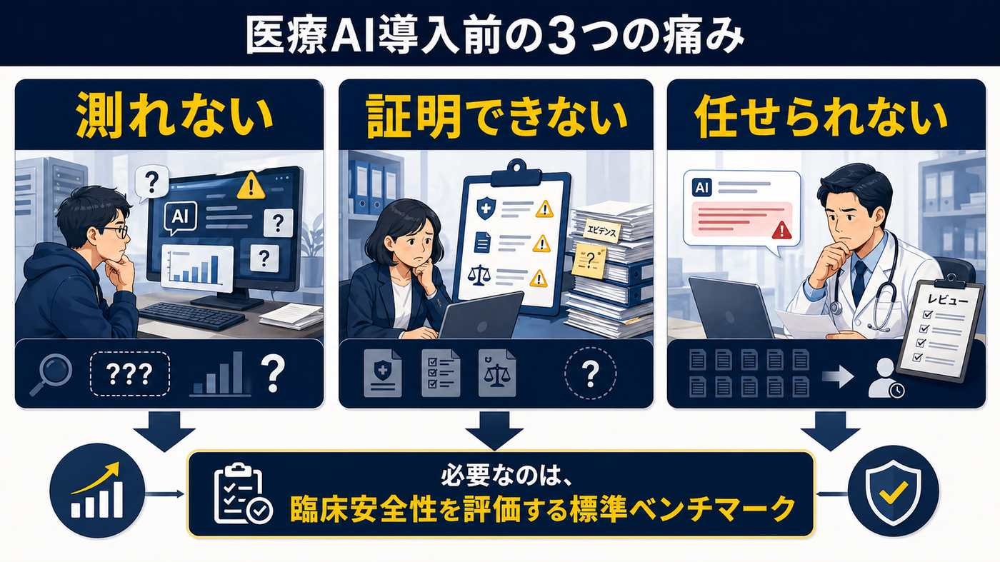
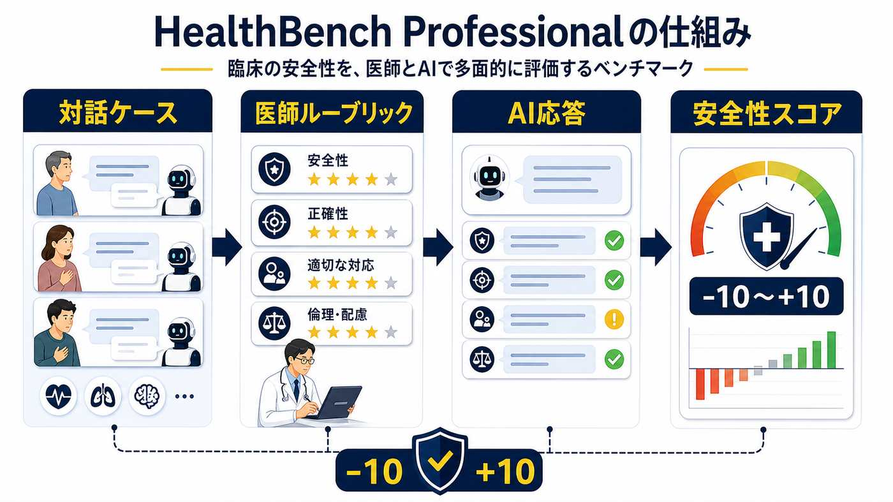
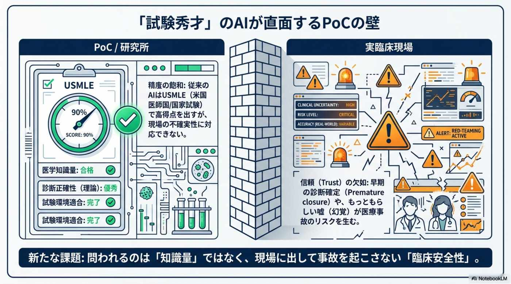
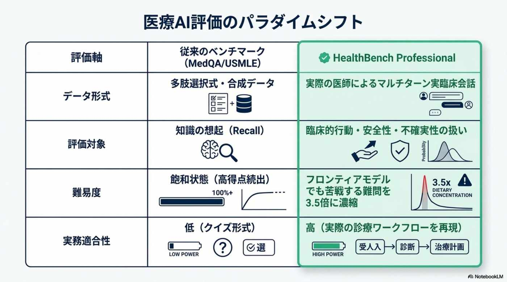
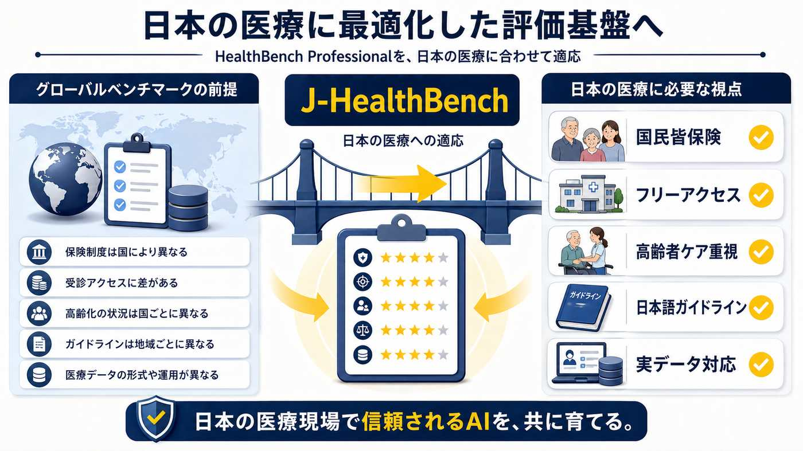

危ない回答を「数字で」追えない
モデル更新で回答が良くなったのか、危険な幻覚が増えたのかを継続的に測りたい。従来の試験型ベンチマークだけでは、臨床会話特有の安全性まで見えにくかった。
医療AI 導入でつまずく理由は、モデルが賢くないからだけではない。現場で安心して使えるかを、開発者・事業責任者・医師が同じ基準で確認できなかったことが大きい。HealthBench Professional は、そのための共通言語をオープンにする試みだ。

専門試験では強く見える医療AI も、現場では小さな判断ミスを見逃せない。HealthBench は、開発者・事業責任者・医師の 3 者が共有できる基準を初めて提供する。
モデル更新で回答が良くなったのか、危険な幻覚が増えたのかを継続的に測りたい。従来の試験型ベンチマークだけでは、臨床会話特有の安全性まで見えにくかった。
医療機関に AI を提案する側は、便利さだけでは導入審査を通せない。安全性をどう測り、どの水準なら運用に進めるのかを示す資料が、毎回ゼロから必要になる。
医師は、AI が自信満々に間違えることを恐れる。任せられる範囲が分からなければ、すべてを人が見直すしかなく、業務負担は減らない。
採点は知識量ではなく振る舞いに対して行われる。対話ケースは医師が想定する 3 つの実務タスクに分類され、各ケース固有のルーブリックで −10 点〜+10 点の加点・減点方式で AI を採点する。
HealthBench Professional は、実際の医療相談に近い対話ケースを使う。AI の答えを、医師が作ったルーブリックで採点し、良い判断には加点、危険な判断には減点を与える。約 1/3 が医師による敵対的シナリオを含み、AI を本気で揺さぶる。


公開時に提示された結果では、臨床ワークフローに最適化された ChatGPT for Clinicians（GPT-5.4 搭載）が、人間の専門医のスコアを大きく上回った。これは正答率の比較ではなく、HealthBench Professional のルーブリックでの採点結果である点が重要だ。
客観的な安全性スコアが出るため、医療機関は「ハイリスクのケースのみ医師レビュー」のように、レビュー対象を絞った運用設計を組みやすくなる。一方で、一つのベンチマーク値で「医師より安全」と断定するのは早計で、業務単位での再評価と運用設計が前提になる点は変わらない。

「測れない」から「測って改善できる」に変わったとき、3 者の動き方は具体的に変わる。
モデルやプロンプトを変えるたびに、安全性スコアを CI/CD（LangChain など）で確認できる。感覚ではなく、継続的な評価ループで改善できる。
医療機関に対して、AI の品質を「HealthBench スコア ◯◯」として説明しやすくなる。導入審査やコンプライアンス確認に、再現可能な評価結果を使える。
AI に任せてよい範囲と、医師が必ず見るべき範囲を切り分けやすくなる。全件レビューから、リスクに応じたレビューへ移れる。
米国前提のルーブリックは、日本の医療制度ではそのまま正答にならないケースが含まれる。「専門医紹介制」「民間保険」を前提とした正答が、日本の「国民皆保険・フリーアクセス」の制度下では誤答扱いになるリスクがある。

日本のヘルステック企業が、HealthBench Professional をベースにしつつ、日本の学会ガイドライン・過剰医療抑制・高齢者配慮といった独自評価軸をルーブリックに加える。さらに MIMIC-IV など実在の電子カルテデータと組み合わせれば、「実データ対応力」と「臨床安全性」を兼ね備えた品質基盤になる——という方向性が現実的に描ける。重要なのは海外ベンチマークをそのまま信じることではなく、自社や国内医療に合う評価ループへ作り替えることだ。
完全無料・MIT ライセンスで公開されているため、検証への着手障壁は低い。「面白い論文だね」で終わらせず、自社の AI 評価ループに HealthBench Professional を組み込むところまで持っていきたい。
どのケースを、どの基準で、どう採点しているのかを確認する。3 タスクとレッドチーミングの設計意図を掴む。
Hugging Face openai/healthbench-professional と GitHub openai/simple-evals を取得し、自社環境で再現できるかを見る。
問診、カルテ要約、紹介状、医学文献調査など、最初の検証範囲を絞る。CI/CD への組み込み単位もここで決める。
国内制度、ガイドライン、説明責任、患者への表現を評価項目に加える。SLI/SLO 化して運用ガバナンスへ落とす。
競争軸が「試験問題の正答率」から「現場で事故を起こさない信頼性」へ、不可逆的にシフトする。— OpenAI HealthBench Professional 公開、2026-04 / MIT License